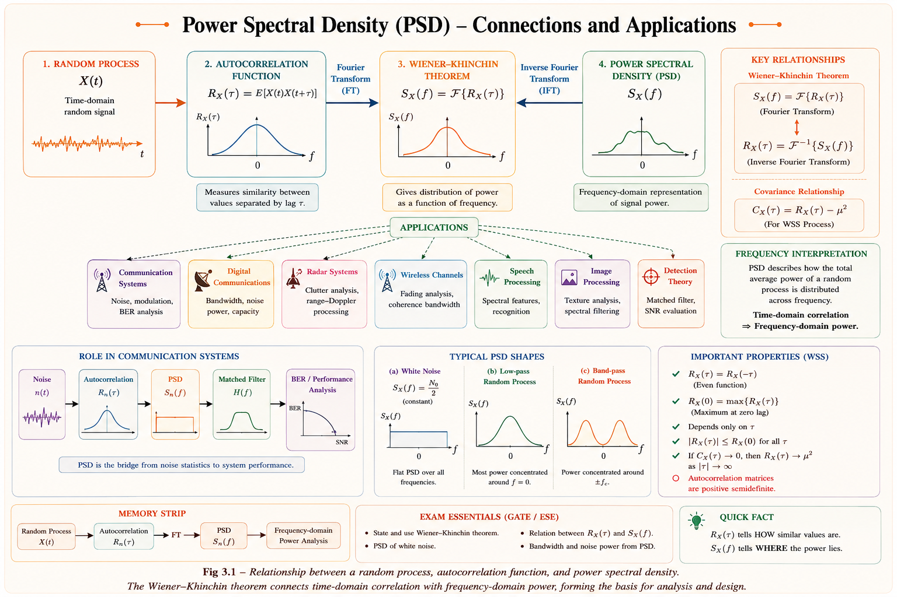
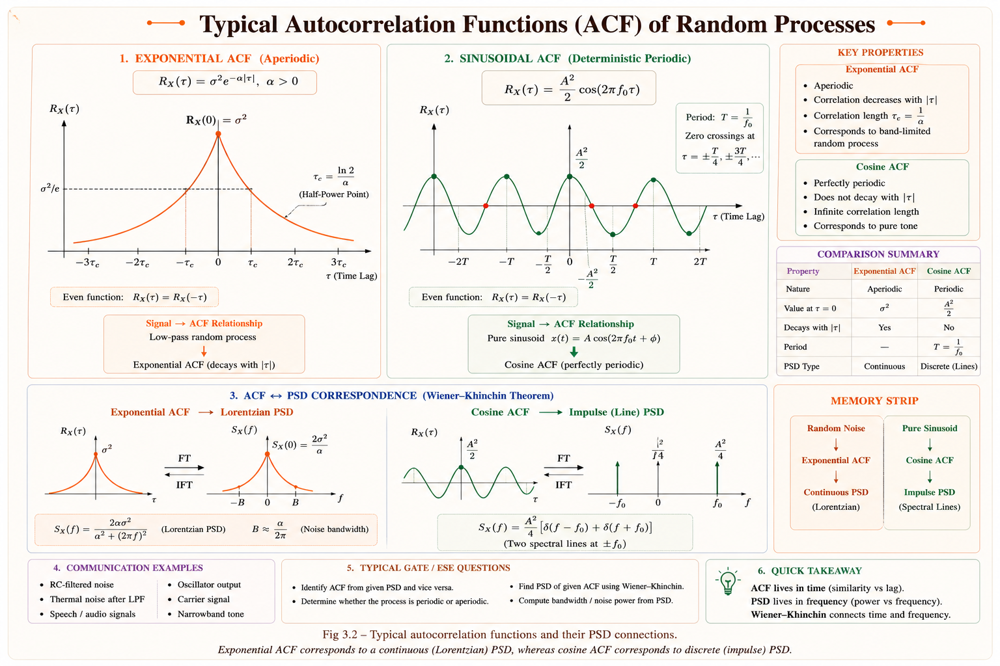
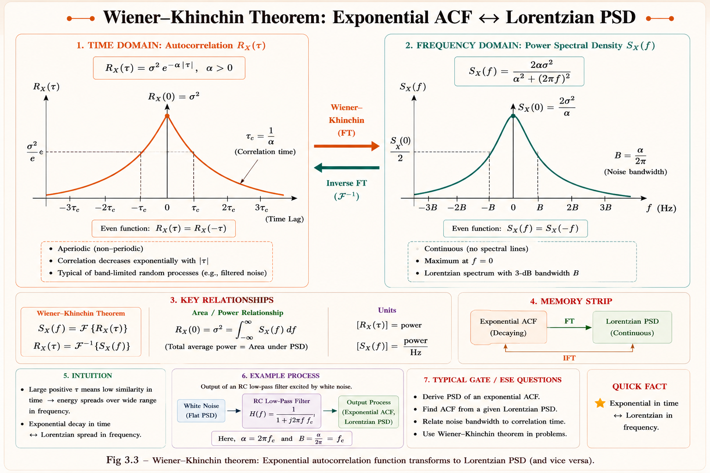
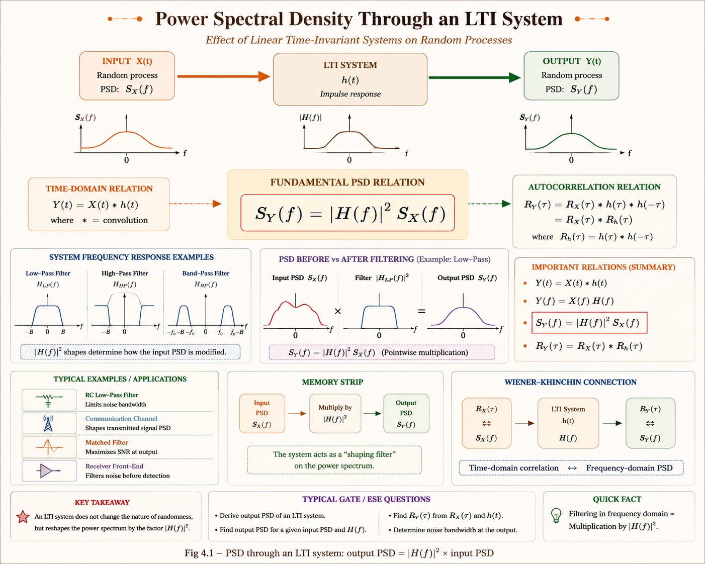
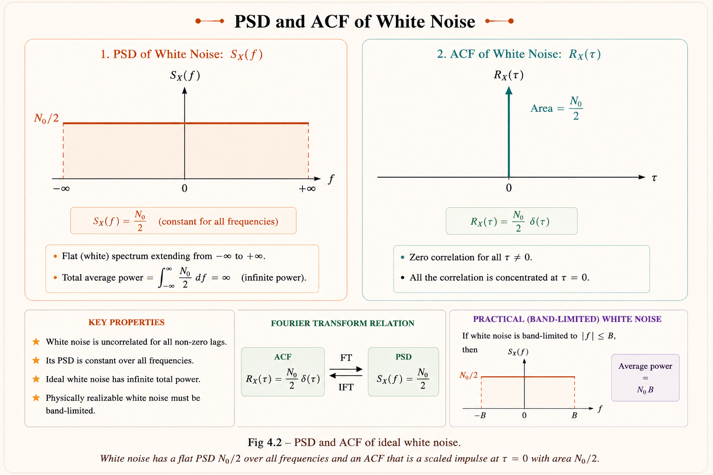
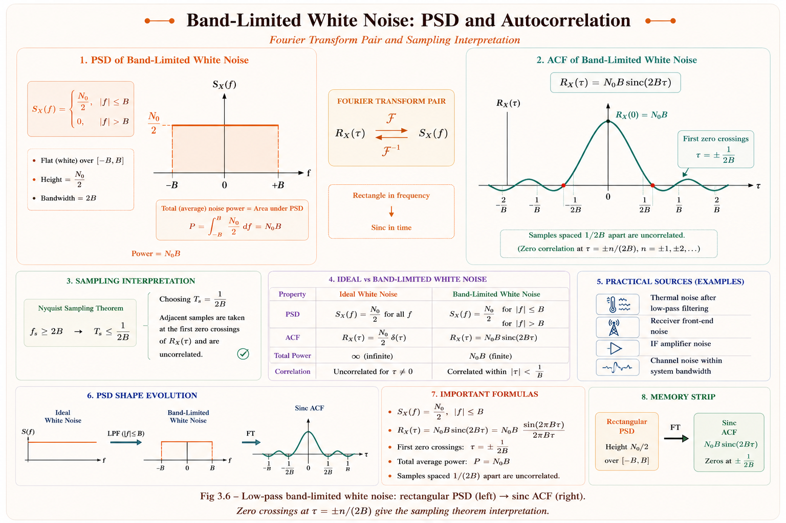
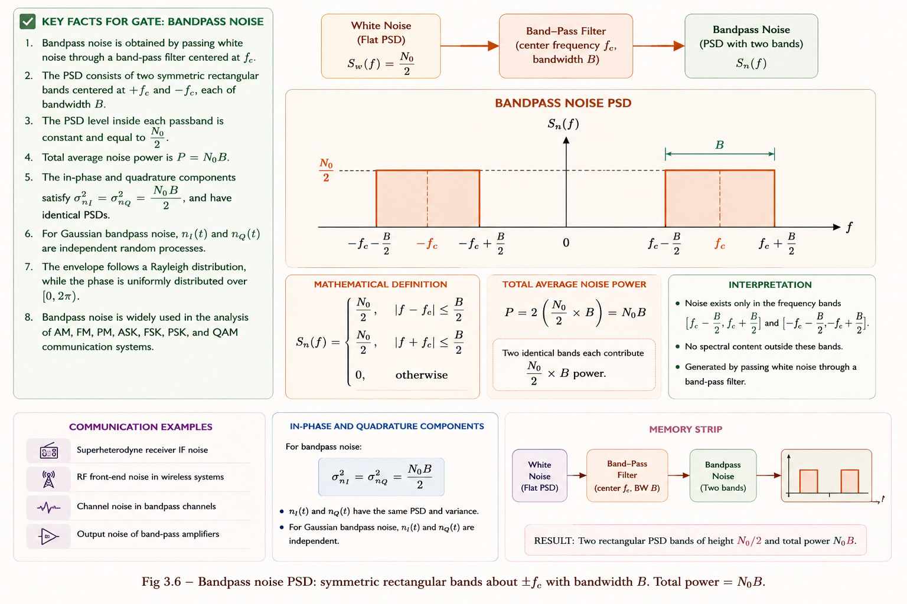

From the Wiener–Khinchin theorem to band-limited channels — master how energy and power distribute across frequency. The foundational framework for every communication, control, and signal processing system you will ever analyse.
Every real-world signal — speech, ECG, radar echo, Wi-Fi — is random. Its exact waveform is unknown in advance. Yet engineers must design filters, amplifiers, and channels to handle it. How? By describing what frequencies carry how much power. That is Power Spectral Density.
Consider a thermal resistor sitting on a laboratory bench. Even with no external source, it produces a tiny fluctuating voltage due to random motion of electrons — Johnson–Nyquist noise. The instantaneous value is completely unpredictable. Yet the total noise power, and how it distributes across frequency, is perfectly predictable through PSD. Engineers use this to design low-noise amplifiers, radar receivers, and communication links.[1]

Fig 1.1 — The PSD pathway: from random processes → autocorrelation → Fourier transform → spectral analysis
Before we can find the power spectrum, we need a statistical description of a random signal that does not require knowing the signal at every instant. The Autocorrelation Function (ACF) \(R_X(\tau)\) provides this — it measures how similar a signal is to a time-shifted copy of itself.[1,2]
Imagine listening to a random noise signal. If you shift the signal by a tiny amount \(\tau\), it still sounds very similar — high \(R_X(\tau)\). If you shift it by a large amount, it sounds completely different — \(R_X(\tau) \approx 0\). The rate at which \(R_X(\tau)\) decays tells you the "memory" of the process — how quickly it changes.
Here \(E[\cdot]\) denotes statistical expectation. For a WSS process, the autocorrelation depends only on the time difference \(\tau\), not on the absolute time \(t\). This is the key stationarity assumption that makes PSD analysis tractable.[2]
| Property | Mathematical Statement | Physical Meaning |
|---|---|---|
| Even symmetry | \(R_X(\tau) = R_X(-\tau)\) | The function is always real and symmetric about \(\tau=0\) |
| Maximum at origin | \(|R_X(\tau)| \leq R_X(0)\) | A signal is most correlated with itself at zero lag |
| Mean square value | \(R_X(0) = E[X^2(t)]\) | Equals the total average power of the process |
| Tail behaviour | \(R_X(\tau) \to \mu_X^2\) as \(\tau \to \infty\) | Widely separated samples become uncorrelated |
| Fourier pair | \(R_X(\tau) \xleftrightarrow{\mathcal{F}} S_X(f)\) | The FT of ACF gives PSD — the Wiener–Khinchin theorem |

Fig 2.1 — Autocorrelation shapes: exponential decay (typical band-limited noise) vs cosine (pure sinusoid)
Concept: Haykin, Communication Systems 4th ed., Ch. 8
Students often confuse autocorrelation \(R_X(\tau)\) with cross-correlation \(R_{XY}(\tau)\). Autocorrelation always uses the same process at two different times. Cross-correlation uses two different processes. Also, for a WSS process, \(R_X(\tau) = R_X(-\tau)\) (even function) — this is a property, not an assumption.
The Wiener–Khinchin theorem (also called the Wiener–Khinchine or correlation theorem) is one of the most important results in the theory of stochastic processes. It establishes the fundamental link between the time-domain description of a random process (its autocorrelation function) and its frequency-domain description (its power spectral density).[1,3]
For a wide-sense stationary (WSS) random process \(X(t)\), the Power Spectral Density \(S_X(f)\) is the Fourier Transform of its autocorrelation function \(R_X(\tau)\):
Consider a power signal \(X(t)\) observed over a finite window \([-T/2, +T/2]\). Define the truncated version \(X_T(t)\). Its Fourier transform exists:
Expanding \(|X_T(f)|^2\) and using the definition of autocorrelation, one arrives at the Fourier transform of \(R_X(\tau)\). This derivation (given rigorously in Papoulis, Ch. 9 and Haykin, Ch. 8) shows that PSD is always a non-negative, real-valued, even function of frequency.[2,3]

Fig 3.1 — Wiener–Khinchin theorem: exponential ACF transforms to Lorentzian PSD (low-pass shape)
After Papoulis & Pillai, Probability, Random Variables and Stochastic Processes, 4th ed.
GATE frequently tests the total power calculation using property 3: Total Power = ∫ \( S_X(f) \) df = \( R_X(0) \). If they give you \( R_X(\tau) \) and ask for total power, just evaluate at τ = 0. No integration needed. This is a 1-mark shortcut that saves 2 minutes.
The Power Spectral Density \(S_X(f)\) is the most important frequency-domain descriptor of a random process. It tells us how much power per unit bandwidth a signal carries at each frequency. Its units are Watts per Hertz (\( \text{W/Hz} \)).[1,2]
Imagine passing the random signal \(X(t)\) through an ideal narrowband bandpass filter of bandwidth \(\Delta f\) centred at frequency \(f_0\). The average power at the filter output equals \(S_X(f_0) \cdot \Delta f\). As \(\Delta f \to 0\), we get the PSD exactly. It is the power density — power per infinitesimal bandwidth.
One of the most powerful and frequently examined results: when a WSS random process \(X(t)\) is passed through an LTI system with transfer function \(H(f)\), the output PSD \(S_Y(f)\) is related to the input PSD by a simple multiplication.[1,3]

Fig 4.1 — PSD through an LTI system: output PSD = |H(f)|² × input PSD
This is remarkable: there is no phase information in PSD (since we take \(|H(f)|^2\), the phase of \(H(f)\) vanishes). This makes sense physically — phase of a random signal is meaningless; power is what matters.
The output autocorrelation \(R_Y(\tau)\) is related to the input by convolution: \(R_Y(\tau) = h(\tau) * h(-\tau) * R_X(\tau)\). In frequency domain this becomes \(S_Y(f) = |H(f)|^2 S_X(f)\) — much simpler to work with.
| Type | Notation | Domain | Relationship | Units |
|---|---|---|---|---|
| Two-sided (bilateral) | \(S_X(f)\) | \(-\infty < f < \infty\) | Symmetric: \(S_X(f) = S_X(-f)\) | \( \text{W/Hz} \) |
| One-sided (unilateral) | \(G_X(f)\) | \(f \geq 0\) only | \(G_X(f) = 2S_X(f)\) | \( \text{W/Hz} \) |
GATE problems almost always use the two-sided PSD. The factor of 2 appears because we fold the negative-frequency contribution onto the positive axis.
While PSD applies to power signals (random processes with infinite duration and finite average power), the Energy Spectral Density (ESD) applies to energy signals (deterministic signals with finite total energy, typically pulses or transients).[1,4]
Here \(X(f)\) is the ordinary Fourier transform of \(x(t)\). The ESD \(\Psi_x(f)\) has units of \( \text{J/Hz} \) = Joules per Hertz.
| Aspect | Power Spectral Density (PSD) | Energy Spectral Density (ESD) |
|---|---|---|
| Signal type | Power signal (random, infinite duration) | Energy signal (deterministic, finite duration) |
| Definition | \(S_X(f) = \mathcal{F}\{R_X(\tau)\}\) | \(\Psi_x(f) = |X(f)|^2\) |
| Units | \( \text{W/Hz} \) | \( \text{J/Hz} \) |
| Total integral | = Mean square power (W) | = Total signal energy (J) |
| Wiener–Khinchin? | Yes (fundamental theorem) | Also valid: ESD = FT of autocorrelation of deterministic signal |
| GATE examples | White noise, thermal noise, random signals | Rectangular pulse, sinc pulse, Gaussian pulse |
A common trap: GATE may give a signal like \(x(t) = A\cos(2\pi f_0 t)\) (a sinusoid — power signal, not energy signal) and ask for its "spectral density." The correct answer uses PSD (with impulse functions at \(\pm f_0\)), not ESD. Always check: does the signal have finite energy or finite average power?
For a deterministic energy signal, define the autocorrelation as \(R_x(\tau) = \int x(t)x(t+\tau)dt\). Then the ESD is the Fourier transform of this autocorrelation: \(\Psi_x(f) = \mathcal{F}\{R_x(\tau)\} = |X(f)|^2\). The theorem applies to both random (PSD) and deterministic (ESD) worlds.
Just as white light contains all colours (frequencies) in equal amounts, white noise contains all frequencies in equal power — its PSD is flat (constant) across the entire frequency spectrum, from \(-\infty\) to \(+\infty\). This is the defining property.
Here \(N_0/2\) is the two-sided noise power spectral density (in \( \text{W/Hz} \)). The subscript "2" in the denominator distinguishes the two-sided PSD from the one-sided PSD \(N_0\). The autocorrelation being an impulse at \(\tau = 0\) means that white noise samples taken at any two distinct time instants are completely uncorrelated.[2,3]

Fig 6.1 — White noise: flat PSD (left) ↔ impulse ACF (right). The Fourier Transform pair that defines white noise.
Reference: Haykin, Communication Systems, Ch. 8; Proakis & Salehi, Communication Systems Engineering
A truly flat PSD from \(-\infty\) to \(+\infty\) would mean infinite total power — physically impossible. White noise is an idealisation valid when the noise PSD is approximately flat over the frequency band of interest (e.g., the communication channel bandwidth). For thermal noise at room temperature, this approximation is excellent up to ~10 THz.
The most important practical realisation of white noise is thermal noise in resistors. From Nyquist's analysis (1928), the open-circuit noise voltage of a resistor \(R\) at temperature \(T\) has:[4]
When white noise is also Gaussian (each sample follows a normal distribution), we get Additive White Gaussian Noise (AWGN) — the standard channel model for digital communication analysis in GATE. AWGN means: (1) additive — noise adds to signal, (2) white — flat PSD, (3) Gaussian — amplitude distribution is normal.
In practice, every real system has a finite bandwidth. When white noise is passed through a bandpass or lowpass filter, the result is band-limited noise — noise confined to a specific frequency range. This is the noise that actually enters receivers, amplifiers, and ADCs.[2,3]

Fig 7.1 — Low-pass band-limited noise: rectangular PSD (left) → sinc ACF (right). Zero crossings at τ = ±n/(2B) give the sampling theorem interpretation.
When white noise is passed through a bandpass filter centred at \(f_c\) with bandwidth \(B\), we get bandpass noise. Its PSD is:
Bandpass noise can be written in quadrature form — the canonical representation used in demodulator analysis:[3]
1. \(n_I(t)\) and \(n_Q(t)\) have the same PSD and variance as each other. 2. \(\sigma^2_{n_I} = \sigma^2_{n_Q} = N_0 B\) (same as original noise power). 3. \(n_I\) and \(n_Q\) are uncorrelated (and for Gaussian noise, independent). 4. Envelope of bandpass noise follows a Rayleigh distribution.

Fig 7.2 — Bandpass noise PSD: symmetric rectangular bands about ±f_c with bandwidth B. Total power = \( N_0 B \).
| Topic | GATE Probability | IES Probability | Typical Question Type |
|---|---|---|---|
| Wiener–Khinchin: find PSD from R(τ) | 🟢 HIGH | 🟢 HIGH | Given \( R_X(\tau) = A e^{-\alpha|\tau|} \), find \( S_X(f) \) |
| Total power from PSD integral | 🟢 HIGH | 🟢 HIGH | Find mean square value of output |
| PSD through LTI system | 🟢 HIGH | 🟡 MED | \( S_Y(f) = |H(f)|^2 S_X(f) \) applications |
| White noise ACF (impulse) | 🟢 HIGH | 🟢 HIGH | MCQ: \( R_W(\tau) = (N_0/2)\delta(\tau) \) |
| Noise power in bandwidth | 🟢 HIGH | 🟢 HIGH | P = N_0B, find power in 10 kHz band |
| ESD vs PSD distinction | 🟡 MED | 🟡 MED | Conceptual MCQ on units and applicability |
| Bandpass noise quadrature representation | 🟡 MED | 🟢 HIGH | Properties of \( n_I \), \( n_Q \); variance calculation |
| ACF properties (max at origin, even) | 🟡 MED | 🟡 MED | True/false or MCQ on ACF properties |
A WSS random process \(X(t)\) has autocorrelation function \(R_X(\tau) = 4e^{-2|\tau|}\). The Power Spectral Density \(S_X(f)\) is:
Using the Wiener–Khinchin theorem: \(S_X(f) = \mathcal{F}\{R_X(\tau)\}\). For \(R_X(\tau) = Ae^{-\alpha|\tau|}\), the Fourier transform is \(S_X(f) = \dfrac{2A\alpha}{\alpha^2 + (2\pi f)^2}\).
Here \(A = 4\), \(\alpha = 2\): \(\quad S_X(f) = \dfrac{2 \times 4 \times 2}{4 + 4\pi^2 f^2} = \dfrac{16}{4 + 16\pi^2 f^2} = \dfrac{4}{1 + 4\pi^2 f^2}\).
Remember the FT pair: \(Ae^{-\alpha|\tau|} \leftrightarrow \dfrac{2A\alpha}{\alpha^2 + (2\pi f)^2}\). This appears in almost every GATE question on PSD.
White noise with PSD \(N_0/2\) is passed through an RC lowpass filter with \(H(f) = \dfrac{1}{1 + j2\pi fRC}\). Find the total output noise power.
Step 1: Output PSD: \(S_Y(f) = |H(f)|^2 \cdot S_X(f) = \dfrac{1}{1 + (2\pi fRC)^2} \cdot \dfrac{N_0}{2}\)
Step 2: Total power \(= \int_{-\infty}^{\infty} S_Y(f)\,df = \dfrac{N_0}{2} \int_{-\infty}^{\infty} \dfrac{df}{1 + (2\pi RC)^2 f^2}\)
Step 3: Using the standard result \(\int_{-\infty}^{\infty} \dfrac{df}{1+a^2f^2} = \dfrac{\pi}{a}\) where \(a = 2\pi RC\):
This equals \(\dfrac{kT}{2C}\) for thermal noise (the well-known kT/C noise formula in CMOS design).
Which of the following is NOT a property of the Power Spectral Density \(S_X(f)\) of a WSS random process?
Answer: (C). PSD is always real-valued. Since \(R_X(\tau)\) is real and even, its Fourier transform \(S_X(f)\) must also be real. Complex PSD is physically meaningless. Options A, B, D are all valid properties.
Bandpass noise \(n(t)\) with PSD \(N_0/2\) passes through an ideal BPF of bandwidth \(B\) Hz centred at \(f_c\). The noise is expressed as \(n(t) = n_I(t)\cos(2\pi f_c t) - n_Q(t)\sin(2\pi f_c t)\). What is the variance of \(n_I(t)\)?
The in-phase component \(n_I(t)\) is a lowpass noise process with PSD equal to \(N_0\) for \(|f| \leq B/2\) (note: one-sided bandwidth B/2). Its variance (= power) is:
Same result for \(n_Q\): \(\sigma^2_{n_Q} = N_0 B\). And this equals the total bandpass noise power — consistent with energy conservation.
Step 1 — Decompose \( R_X(\tau) \): Write as two terms: \(R_X(\tau) = 9 + 4e^{-3|\tau|}\)
Step 2 — Apply W-K theorem to each term:
Term 1: \(\mathcal{F}\{9\} = 9\,\delta(f)\) (constant → impulse at DC)
Term 2: \(\mathcal{F}\{4e^{-3|\tau|}\} = \dfrac{2 \times 4 \times 3}{9 + (2\pi f)^2} = \dfrac{24}{9 + 4\pi^2 f^2}\)
Step 3 — Total Power: \(P_{\text{total}} = R_X(0) = 9 + 4e^0 = 9 + 4 = \mathbf{13 \text{ W}}\)
Step 4 — DC Power: From the impulse component, DC power = \(9\) W (this is \(\mu_X^2 = [E[X]]^2\), since \(\lim_{\tau\to\infty}R_X(\tau) = 9 = \mu_X^2 \Rightarrow \mu_X = 3\))
Step 5 — AC Power: \(P_{\text{AC}} = P_{\text{total}} - P_{\text{DC}} = 13 - 9 = \mathbf{4 \text{ W}}\)
Key shortcut: if \(R_X(\tau) \to C\) as \(\tau \to \infty\), then DC power = C and mean = √C. This avoids integral computation.
Given: \(N_0/2 = 10^{-6}\) \( \text{W/Hz} \), \(f_c = 100\) kHz, \(B = 20\) kHz
Part (a) — Total output power:
Note: factor of \(2B\) because PSD extends over \([f_c - B/2, f_c + B/2]\) AND \([-(f_c + B/2), -(f_c - B/2)]\), total bandwidth = \(2B\) in double-sided sense.
Part (b) — ACF:
Part (c) — RMS voltage:
(a) Mean Square Power: \(E[X^2] = R_X(0) = 25\cos(0) + 16e^0\cos(0) = 25 + 16 = \mathbf{41 \text{ W}}\)
(b) DC Component: \(\lim_{\tau \to \infty} R_X(\tau) = 25\cos(4\pi\tau)\). This does not decay to a constant — it oscillates. This means the process contains a periodic (sinusoidal) component. The mean-square value of this periodic part = 25/2 = 12.5 W. There is no true DC (non-oscillating) component here.
(c) Mean Value: For the DC calculation, \(\mu_X^2 = \lim_{\tau\to\infty}R_X(\tau)\). Since the limit oscillates, \(\mu_X = 0\) (the DC value is zero; the \(25\cos\) term represents a sinusoidal component of the process, not a constant mean).
Students confuse \(\lim_{\tau\to\infty}R_X(\tau)\) oscillating (→ sinusoidal component in signal) with converging to a constant (→ DC component). A purely sinusoidal ACF tail means the signal has a periodic component — its average (mean) is still zero.
Ask any doubt about PSD, white noise, Wiener–Khinchin, or band-limited noise. Get a step-by-step explanation instantly.
WSS process → R_X(τ) autocorrelation → Apply Fourier Transform → PSD \( S_X(f) \). "WRAP" the time domain into the frequency domain.
PSD is flat (constant N_0/2) · Uncorrelated samples at any τ≠0 · R_W(τ) = (N_0/2)δ(τ) · Energy is infinite (ideal model only).
\( R_X(\tau) = E[X(t)X(t+\tau)] \) for WSS. Even, non-negative at \( \tau=0 \), total power = \( R_X(0) \). Decays to \( \mu^2 \) as \( \tau\to\infty \).
\( S_X(f) = \text{FT}\{R_X(\tau)\} \). Applies to WSS processes. PSD is always real, non-negative, and even. Total power = \( \int S(f) \, df = R(0) \).
\( S_Y(f) = |H(f)|^2 S_X(f) \). Phase of H(f) cancels. Most important result for noise analysis in circuits and systems.
Flat PSD: \( N_0/2 \) for all \( f \). ACF = \( (N_0/2)\delta(\tau) \). Samples uncorrelated. Infinite power (idealisation). AWGN = white + Gaussian.
LPF: \( S(f) = N_0/2 \) for \( |f| \leq B \), power = \( N_0 B \), ACF = \( N_0 B \text{ sinc}(2B\tau) \). BPF: same power, ACF has cosine modulation.
\( \text{ESD} = |X(f)|^2 \) for energy signals (\( \text{J/Hz} \)). PSD = \( \text{FT}\{R_X(\tau)\} \) for power/random signals (\( \text{W/Hz} \)). Both use Parseval's theorem.
All technical content is derived from the following standard textbooks. All explanations, derivations, diagrams, and examples are original to Aarova AI.